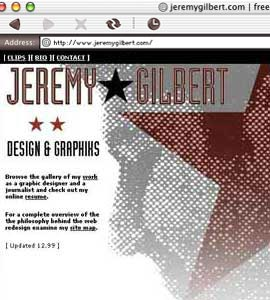

| VERSION 8.0 | NEXT The eighth version of of my personal site was influenced by Russian Constructivism. Having spent six weeks studying at the Poynter Institute, I was inspired by the work of Alexander Rodchenko and other Soviet artists from the 1920s and 1930s. The site proved functional and quick-to-load relying on a single background image, a series of place holders to anchor the text and handful of other graphics. |  |
|
| VERSION 8.0 : 6.99 | NEXT | ||